DeltaV PredictPro
DeltaV PredictPro implements model predictive control of large multivariable processes in DeltaV environments. It allows you to define as many as five control and economic objective functions for interactive processes within measurable operating constraints while automatically accounting for process interaction and measurable disturbances. With PredictPro you can address a wide variety of multivariable processes as large as 40×80 that can benefit from Model Predictive Control (MPC) technology.
PredictPro allows users with moderate process control knowledge to quickly and easily apply MPC control strategies. Its ease of use and speed in implementing MPC control strategies surpasses traditional MPC techniques and PID control strategies.
DeltaV PredictPro consists of the following set of tools:
- Model Predictive Control Professional Function Block (MPCPro) - used to implement large multivariable control strategies
- Model Predictive Control Professional Plus Function Block (MPCPlus) - used to implement large multivariable control strategies and to achieve improved performance of highly constrained operations
- PredictPro application - used to generate the model and controller for the MPCPro and MPCPlus function blocks and to test the model and control in a simulation environment
- MPC Operate Pro application and advanced control dynamos - used by operators to view and interact with control implemented with the MPCPro and MPCPlus function blocks
The software components associated with the DeltaV PredictPro application require that you purchase licenses for the specific number of Manipulated parameters used by the MPCPro block or MPCPlus block.
The following sections describe the MPCPro and MPCPlus algorithms and provide information on using the PredictPro application.
Algorithm
The sections about the algorithm include information on the:
- Process model identification algorithm used to develop the process model for the MPCPro and MPCPlus controllers
- Control functionality provided by the MPCPro and MPCPlus blocks
Using PredictPro
The sections on using PredictPro include information on how to use:
- The PredictPro application to test a process and identify the associated step response model to generate the control
- The PredictPro simulation environment to fully test MPCPro and MPCPlus control before placing it online
- A DeltaV Operate dynamo set to interface with the MPC function block
The MPCPro and MPCPlus function blocks are designed to address large interactive control processes. The optimization capability embedded in both blocks can be used to address a variety of multivariable process control applications. The MPCPro and MPCPlus function blocks can be found on the Advanced Control palette in the Control Studio application. Like other DeltaV modules, modules containing the MPCPro function block are downloaded to a DeltaV Controller or to an Application Station.
With DeltaV PredictPro, you can run an automated test on your process after downloading the module containing the MPCPro or MPCPlus function block. The PredictPro application uses data automatically gathered by the Continuous Historian during testing to create a step response model of your process. You can evaluate the accuracy of the model using the verify support provided by the PredictPro application as part of the model generation. DeltaV PredictPro uses the verified model to automatically generate the controller matrix used by the MPCPro function block. The MPCPlus block does not require offline controller generation; therefore after a verified model is downloaded to the MPCPlus block, it is ready for operation. Special advanced control dynamos allow you to easily define an MPCPro operator interface.
If you are using the MPCPro block and have generated the control using DeltaV PredictPro, you can download the module containing the MPCPro function block with the updated control matrix into a DeltaV controller. Through the DeltaV PredictPro operator interface, you can place the control into operation to monitor it. A special PredictPro diagnostic screen allows you to detect any problems in MPCPro or MPCPlus operation.
DeltaV PredictPro Algorithm
This section presents the technical background and implementation of MPCPro and MPCPlus. Both predictive control algorithms have their roots in Dynamic Matrix Control (DMC). MPCPlus is a recent and advanced version of DMC. MPCPro has significant modifications to avoid online controller generation, resulting in unconstrained offline controller generation and the use of an online downloaded controller. Constraints on the process outputs are handled by an embedded LP optimizer that can adjust working setpoints of the controlled variables to achieve a user-defined control objective. Both algorithms use the embedded LP optimization to achieve user defined control objectives, asymmetric funnel control, range control, and reference trajectory. Control robustness is substantially improved as a result of these enhancements.
Understanding the details of the algorithms is not necessary to successfully use DeltaV PredictPro. The algorithm details are included primarily for the advanced user. A good process model is the key to model predictive control. Process identification is performed using two types of models: Finite Impulse Response (FIR) and Auto-Regressive (ARX). Model validation is accomplished by matching simulated and real process data.
Process optimization is implemented using an embedded linear program (LP) optimizer. It can be used to achieve operating objectives by maximizing or minimizing selected process variables while maintaining the process within constraint limits. As many as five control objective functions that an operator can select for the control can be defined. Such optimization is an inherent part of both algorithms. Both algorithms are embedded in the DeltaV controller and the Application Station as function blocks and are supported by the DeltaV PredictPro application.
Process modeling and confidence intervals
The process model is the basis of MPC technology. DeltaV PredictPro uses step response modeling for the generation of the MPC controller. This approach has been proven effective in numerous DMC applications. Step response modeling makes prediction of process outputs explicitly available for display in the application. The predicted error vector is computed first and used as an input to the MPC controller. Displaying the prediction to an operator is an important way to visually evaluate the current and future state of the process and the impact of process control intervention. DeltaV PredictPro's operator interface displays the future process outputs.
Step response modeling is the most common form of model representation for MPC. It makes the prediction of process outputs available explicitly. Future output prediction is used to compute the predicted error vector as an input to the MPC controller. This section reviews the basics of step response modeling and the more advanced topic of the confidence levels of the identified model parameters.
For a Single Input Single Output (SISO) process, the differential Finite Impulse Response (FIR) model describing the output response is:
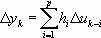
where p is the prediction horizon hI are the identified model impulse response coefficients, yk the model output, and uk the model input. Research has shown that typically, 30 to 120 coefficients are required for an impulse response to describe the dynamics of a simple first order plus dead time process and higher order complex processes. However, identifying the step response with the full prediction horizon and as many as 120 coefficients (especially in the MIMO case) causes overfitting and results in significant parameter uncertainty, a common problem for FIR identifiers. An alternative modeling technique, AutoRegressive with external inputs (ARX), has significantly fewer coefficients than FIR model.
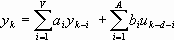
where A, V are the autoregressive and moving average orders of ARX, d denotes the dead time, and aI, bI are the model coefficients. An order of four has been observed to satisfy the most practical applications. It has been shown that by using a short FIR horizon, the dead time can be identified and then used to better determine the ARX model. For a Multiple Input Multiple Output (MIMO) process, superposition is applied from each input (additive action) on every output. After ARX is defined, a unit step is applied on one of the inputs and the identified ARX model is used to get step responses for that input.
An understanding of confidence intervals can be derived by showing that process model identification can be presented as a mapping of the measurement data set
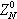
into a model parameter estimate set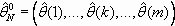
contained into parameters set :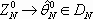
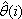
In the above FIR and ARX model representations is (
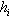
) and (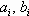
) respectively, a very important property of any identification technique is convergence of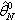
when number of samples N tends to infinity. Measurement and processing errors of data set have random components, therefore set is not a unique realization of
the true model parameter set
is not a unique realization of
the true model parameter set
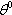
. There are infinite possible realizations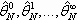
of the true parameter set developed from hypothetical data sets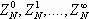
. Therefore parameters estimate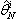
occurs with some probability. From a practical perspective, it is more interesting to know the probability distribution of the difference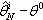
. When the distribution is known, the quantitative uncertainties of the estimate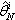
are known.The task is to estimate without knowing . It has been proven that for large N, every parameter from the estimate asymptotically converges (with confidence level ) to the normal distribution, with the density function:
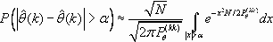
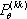
is the variance of the parameter estimate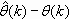
. is the k,k element of the covariance matrix . The equation for estimating the
covariance matrix is:
. The equation for estimating the
covariance matrix is:
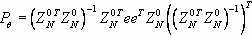
is the data set arranged in the same manner as used for identification (FIR or ARX in these examples);
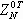
is transpose of ; is set of errors between process outputs and model outputs.Applying this equation however, requires calculation of the process model first in order to develop the error set. Alternatively, the covariance matrix
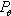
can be defined directly from singular value decomposition (SVD) of the data matrix :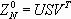
Matrices U, S, V are products of the SVD. Then,
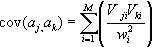
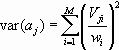
The Vji are elements of the V matrix; wI are elements of the diagonal matrix S; M is the dimension of the matrix S;
Standard deviation of the model parameters is defined as:
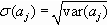
This presents the model quality information in a more usable form than the error probability distribution. Standard deviations of the model parameters establish the range of parameter value with a predefined probability. For example, a 95% confidence region means that the true parameter value lies in the region with a 95% probability. With the assumption of normal distribution of errors, range of 2σ(aj) around the identified parameter value defines the 95% Confidence Interval (CI), 3σ gives the 99% CI, and so on.
Step responses can be generated from parameter standard deviations σ(aj), and from model parameters. The confidence regions are obtained over the prediction horizon, thus giving the range of response parameters such as gain and dead time. To get 95% confidence interval boundaries, double the standard deviation, compute the step response, and superimpose it on the original step response in both positive and negative directions. For 99% confidence intervals, triple the standard deviation, and proceed in a similar manner. An example of confidence intervals for a step response is shown in the following figure. The 95% and 99% confidence regions about the identified step response are depicted. Naturally, the region becomes larger for higher probability and vice-versa. For MPC models, a ninety five percent confidence interval is a practical choice. A useful interpretation of this information is in establishing ranges of the step response parameters. For example, for the response in the following figure, the gain has a range between 1.4 and 2.05 with 95% confidence; and between 1.25 and 2.2 with 99% confidence. This information is applied towards estimating the parameters for robust controller generation. Having confidence intervals available for every step response in the process model, it is possible not only to detect errors on the model output but also to identify specific step responses that can most contribute to prediction errors.
Integrated optimization and Model Predictive Control
For processes with several Manipulated or Controlled variables, optimization techniques are an essential component of Model Predictive Control technology. One proven approach uses linear programming (LP) with steady state models. Linear programming is a mathematical technique for solving a set of linear equations and inequalities that maximizes or minimizes an additional function. This additional function is called the objective function. Usually objective functions express economic value like cost or profit.
Specifically, MPCPro optimization considers incremental Manipulated Variable (MV) values at the present time or the sum of increments of the MV over control horizon, and incremental values of Controlled and Constrained Values (CV) at the end of prediction horizon, instead of positional current values as in typical LP applications. LP technique uses steady state model and therefore steady state condition is required for its application. With the prediction horizon normally used in MPC design, future steady state is guaranteed for self-regulating processes. Predicted process steady state equation for an m by n input-output process, with prediction horizon p, control horizon c, in the incremental form is:
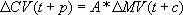
where:
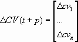
denotes predicted changes in outputs at the end of prediction horizon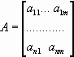
is the process steady state m × n gains matrix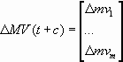
denotes changes in manipulating variables at the end of control horizonVector ΔMV(t + c) represents the sum of the changes over control horizon made by every controller output mvi.
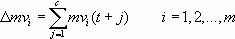
The changes should satisfy limits on both MVs and CVs.
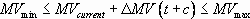
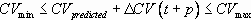
The objective function for maximizing product value and minimizing raw material cost can be defined jointly in the following way:
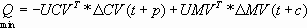
where UCV - cost vector for a unit change in CV process value and UMV - cost vector for a unit change in MV process value. Applying the objective function expressed in terms of MV only is:
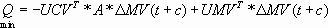
The LP solution is always located at one of the vertices of the region of feasible solutions. This is shown in the following figure for a two dimensional problem.
The region of feasible solutions for two Control/Constraint variables and two Manipulated variables is an area contained within MV1 and MV2 limits represented by the vertical and horizontal lines and CV1 and CV2 limits represented by the straight lines as shown below.
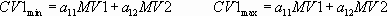
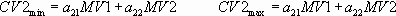
The optimal solution is located at one of the vertices marked by arrows. To find this solution, the LP algorithm calculates the objective function for an initial vertex and improves the solution every step until it determines the vertex with maximum (or minimum) value of the objective function as the optimal solution. In addition to constraints and economic objectives, the PredictPro Optimizer also accounts for controlled objectives that include target set points for any selected CV, preferred settling values and equalizing for selected MVs.
Optimal MV values are applied to the MPCPro control as the target MV values to be achieved within control horizon. If the MPC controller is squared as in the MPCPro block, that is the number of MVs is equal to the number of CVs, then MV targets can be effectively achieved by changing the CV value.
ΔCV = A * ΔMVT
ΔMVT - is the optimal MV target change
ΔCV - is the CV change to achieve optimal MV
This is the default option for the MPCPro block and can be used when the process is not over constrained.
The MPCPlus controller applies both CV and MV targets as optimizer objectives with any configuration. This approach improves constraint handling. Additionally, MPCPlus generates the controller online which accounts for actual constraints and objectives.
The option to include both CV and MV targets can be selected as well for offline MPCPro controller generation. This improves constraint handling; however, since the controller is generated offline, it may not perform as well as the MPCPlus controller. Specifically, the MPCPro controller will not use unconstrained MVs to compensate for constrained MVs, including MVs that are constrained by the Rate of Change ( Max MV Move Per Sec) limit.
The MPCPro algorithm working with the optimizer has two main objectives:
- Minimize CV control error with minimal MV moves within operational constraints.
- Achieve optimal steady state MV values set up by the optimizer and target CV values calculated directly from MV values.
In operation, the optimizer sets up and updates the steady state targets for the MPC unconstrained controller at every scan, thus MPC controller executes the unconstrained MPCPro algorithm or the constrained MPCPlus algorithm. Since the targets are set in a manner that accounts for constraints, as long as a feasible solution exists, the controller works within constraint limits. Optimization therefore, is an integral part of the MPC controller. The integrated MPC controller and optimizer performs the following sequence of operations each scan:
- Update CV and DV measurements
- Update CV predictions
- Determine optimal MV steady state targets and calculate CV targets by running the LP Optimizer
- Determine dynamic MV outputs accounting for CV and MV targets by running the MPC controller
- Update MV
The figure below shows communication between and integrated operation of the optimizer and MPC algorithm. There is a typical situation when the optimizer cannot find the optimal solution because constraint limits are too tight, there are too many set points, or the disturbances are too severe. In such cases the optimizer relaxes the system constraints by changing set points to range control (if defined) and/or abandoning some lower priority constraints.
Poor conditioning is another typical problem an optimizer has to deal with. As with the MPC algorithm, poor conditioning manifests itself as excessive changes in calculated MV targets, even for minor correction of constraints. In this approach, poor conditioning can be removed dynamically by changing configuration of active constraints (abandoning some constraints) or by removing the association between Constraint or Controlled variables and Manipulated variables that have excessive moves.
MPCPro and MPCPlus are implemented as function blocks. The parameters used for configuration and operation can be displayed and edited in Control Studio and from predefined operator interfaces. Simple parameters such as MODE or SP can be displayed and modified of-line and online in the traditional way.
Function block technology features cascade inputs (CAS_IN) and remote cascade inputs (RCAS_IN) as well as corresponding back calculation outputs (BKCAL_OUT and RCAS_OUT) on both control and output function blocks. Using these connections, it is possible to attach a supervisory optimized MPC control strategy on top of an existing control strategy. Targets for the optimized MPC controller can be modified from the higher strategy.
Robust offline controller generation (MPCPro)
This section briefly demonstrates how Confidence Intervals (CI) are used towards robust controller generation. An MPCPro controller is generated from the process model and controller design parameters which are automatically calculated from the model. It minimizes the squared error of Controlled Variables over the prediction horizon and the squared values of the changes in Manipulated variables over the control horizon providing stable operation and acceptable performance over a wide range of process parameter changes.
Sensitivity of control to changes in process dynamics is determined by the controller robustness. From an implementation standpoint, it is observed that the penalty on moves (PM or POM) factor, that defines how much the MPC controller is penalized for changes in the MV output is the most convenient tuning parameter that impacts controller robustness. High PM values result in a slow controller with a wide stability margin. With these settings, the control is relatively insensitive to change in either the process or the model errors. Low PM values result in a fast controller with a narrow stability margin. When the model used in generating the control accurately reflects the process gain and dynamics, changing the PM value does not significantly affect the controller performance. Experimental observations show that the dead time margin and gain margins are strongly affected by the process dead time. It follows that dead time should be accounted for as a major factor in calculating PM. As can be expected, gain also influences the PM selection. Numerical experiments involving these two parameters have provided a PM factor that has shown stable and responsive MPC operation for model error of up to about 50%:
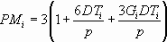
where DTI is the dead time in MPC scans for an MVI – CVj pair, GI is gain (no units) for the MVI – CVj pair, the criterion for pairing (particularly in the case of MIMO and SIMO systems) is that the chosen MVI has maximum influence on CVj, p denotes the prediction horizon as before, and MV and CV denote Manipulated Variable and Controlled Variable respectively. Knowledge of the step response confidence intervals facilitates estimating the range of the gain and dead time parameters for a specific MVI - CVj pair. In the following equation, these estimates are used in calculating PM values to design a controller for the worst case, in turn ensuring robust controller operation.
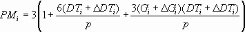
Consider a simple example of controller design for a SISO process whose true process parameters are dead time of 31 scans and steady state gain of 1.55. For the identified response, process gain is 1.0 and dead time is 20 scans. This resulted in a PM of 7.5 without using confidence intervals. The 95% confidence region resulted in a gain interval of 0.5 and dead time interval of 10 scans. Applying these ranges to the modified equation obtains a PM of 15.0. The corresponding set point responses of the generated controller are shown in the following figure (without using CI) and in the figure after that (using CI).
The MPC and Optimizer algorithm have been implemented as a control function block (MPCPro). In this way, the block has become a part of the system functionality with ease of configuration and reliable operation in any controller or workstation node. Many features of the MPCPro function block design are similar to the MPC function block for small and medium size processes.
The MPCPro function block has the following features:
- The process model matrix can be up to 40×80 (MV+DV)x(CV+AV)
- The control matrix can be up to 40x40 (MVxCV)
- It can be configured, commissioned, operated, and diagnosed in integrated control system environments
- The function block includes performance monitoring for controlled variables
- Up to five objective functions can be defined for the optimizer based on priorities and user preference to minimize or maximize variables. The objective functions are selected manually or automatically during online operation.
Constrained online controller generation (MPCPlus)
MPCPlus dynamic move calculation has several enhancements. First, the control matrix is generated online at each control cycle. The most important advantage of this is that all dependent variables (CV and AV) are included in the Dynamic Matrix for the move calculation. The Penalty on Error (POE) for each dependent variable is adjusted at each control cycle. If a CV is far from its limits, its POE can be set to zero to effectively remove it from the dynamic control problem. Conversely, if a CV is near a limit, the full value of the POE is used. This way the dynamic move calculation at each control cycle includes only those CVs that are near limits and excludes those that are far from limits.
A second advantage of generating the control matrix online is that tuning changes in POM or POE are implemented at the next control cycle; there is no need to upload the control matrix.
The final enhancement in the Dynamic Move Calculation section is the enforcement of MV constraints on the future moves plan. This prevents the controller from planning on moves that cannot be implemented. The general approach is to first calculate the unconstrained MV solution and then to find the first MV to become constrained in time (find the earliest MV constraint violation). The allowable portion of the moves plan for this MV is then imposed on the problem. Next, the unconstrained solution using the remaining MVs is calculated and the process is repeated until either all MVs are constrained or the unconstrained solution does not violate any constraints. That is, when a constraint violation is detected in an MV moves plan, the allowable portion of that moves plan is implemented and the problem is re-solved with the remaining MVs.
After developing a model, the default tuning for POE and POM is set automatically.